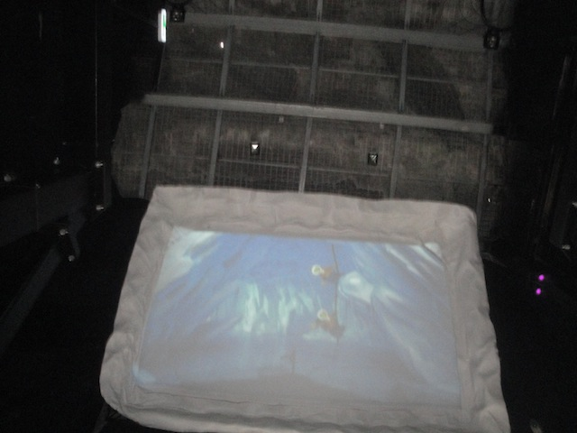

| |
Polar X-plorer Review

We're here at Legoland Billund. Today's coaster we'll be reviewing is certainly an intersting one. There's very few rides like this. And it's definetly one of the more...interesting family coasters. It's a fun ride and all, but it has a fun surprise. I'm sure many of you know of it. But just in case you don't, let me get this out of the way. SPOILER ALERT: Polar Xplorers surprise will be revealed in this review. Let's ride and see what it will be. We get in the cars, pull down the lap bars, and we're off. We roll around a turn and head up the lifthill. We don't get much of a view from here, but we eventually get to the top, and head down the curved first drop. We actually gain some speed from here. For a family coaster, this is pretty good. We then rise up a big hill. There may not be any airtime, but it's still a lot of fun. We then get to "TAKE THE MOUNTAIN!!!" as we curve into a helix in the mountain and to the ground. We get some nice positive Gs here. We then head through a small little hill going through an arch. Hey. There's a little bit of mild floater air here. We then coast into an upward helix before heading around another turn. Just cruising. Nothing special. It's enjoyable. We then glide into what feels like a midcourse brake run. Except we're stopping completely. Only now we're indoors and looking at a screen. It's a couple of lego dudes who are ice climbing (Hey. That looks cool. Would like to try it sometime, except it takes a lot of experience, a lot of practice, and a lot of money). But because these ice climbers are lego idiots, they wind up cutting off the glacier they're trying to climb and drop. And WOAH!!! We fall. No really. The entire track just drops. It's not very far. Just 15ish feet. Something like a Cascade Pond. It mainly is fun just because it gets us by surprise. And hey. It really works with the theme. We then dip out of the cave and come into the light. But we're essentially crawling at this point. We go around a small dip, and just enjoy the lego animals. We have Lego Polar Bears, Lego Wolves, and Lego Seals. We better get out of here. There's gonna be lego blood spilt soon. We then enter a cave and come completely into the brake run. Oh, and you can see actual animals to your right now. So yeah. That was Polar Xplorer. A really fun family coaster. It's got some decent speed, a little bit of positive Gs, and of course, that drop which is just a ton of fun. And on top of that, it has a really fun theme. You get to see lego animals, lego ice climbers, and just a lot of fun. It's a great addition to Legoland Billund and if you're ever around, give it a ride. It's a really fun little ride.
6/10
Location: Legoland Billund
Opened: 2012
Built by: Zeirer
Last Ridden: June 18, 2014
Polar X-plorer Photos



Home
|